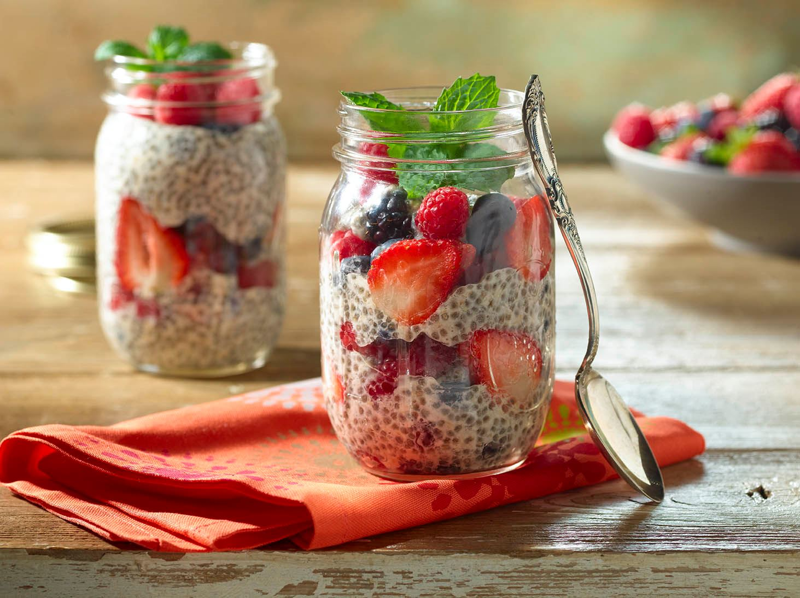

Recetario
Recetas vegetarianas
Snacks
Dulces
Carnes
Únete al club Recetario
FOR BRUNCH HOURS: SNACKS!
Pudding de chia con frutas
Tostadas Veg
Batido verde
Pudding de chia con frutas

Ingredientes
Leche
Semillas de chia
Miel
Frutos rojos
Pasos a seguir:
En un recipiente o frasco de mermelada, mezclar las semillas de chia con la leche y la miel.
Llevar a la heladera por unas horas. Tip: realizarlo una noche antes
Cortar los frutos rojos o de preferencia.
Servir la chia con los frutos rojos y almendras u otros frutos secos a gusto.
A comer!
Aquí te compartimos un video de cómo hacer deliciosos pudines de chia veg.